NOTA IMPORTANTE: Photoduino Shield 1.0 y 2.0 han dejado de recibir soporte. Tal vez quieras ver la Photoduino Shield 3.0.
“Photoduino Shield” es el corazón del proyecto Photoduino. Es una placa PCB que se coloca sobre una placa Arduino y toma todas las entradas y salidas, así como los pines de alimentación. Tiene todas la electronica necesaria y los conectores para conectar la camara, los flashes, sensores y una pantalla LCD con dos botones para la interacción.
- Photoduino Shield 1.0 Es la mejor opción para fabricar en casa porque está diseñada en una sola cara.
- Photoduino Shield 2.0 Está diseñada en dos caras, por lo que es más complicada de fabricar en casa.
Ambas versiones son compatibles y usan los mismos componentes.
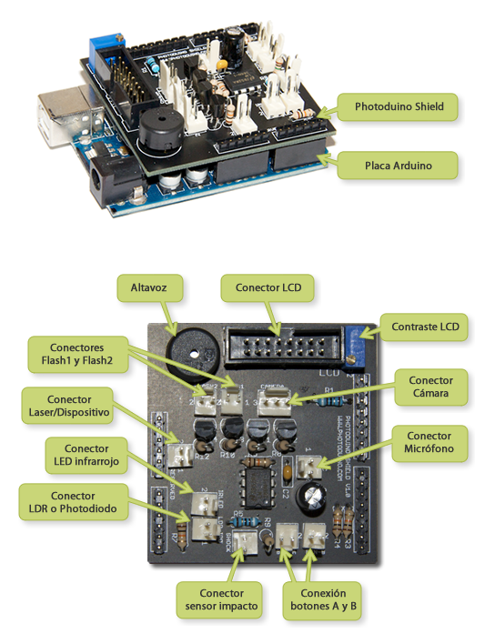
Lista de componentes
| IMAGEN | CANTIDAD | NOMBRE |
|---|---|---|
 |
1x | Photoduino Shield PCB 1.0 o 2.0 |
 |
1x | Arduino Board (Duemilanove o UNO) |
| 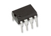 | 1x | LM386 Amplificador operacional |
 |
4x | SCR BT149D tiristor |
| 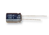 | 1x | 10uF condensador electrolítico |
 |
1x | 10nF condensador cerámico |
| 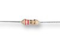 | 2x | 92 ohms 1/4w resistencia |
| 1x | 1M ohms 1/4w resistencia | |
| 8x | 10K ohms 1/4w resistencia | |
 |
1x | 10K ohms potenciometro trimmer |
| 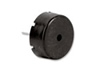 | 1x | altavoz piezoelétrico |
 |
1x | 50 pines pinheader |
 |
1x | ML16 (16 pines IDC) Molex PCB macho |
| 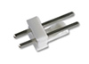 | 9x | Molex PCB macho 2 pines |
 |
1x | Molex PCB macho 3 pines |
| 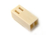 | 9x | Molex PCB hembra 2 pines |
 |
1x | Molex PCB hembra 3 pines |
| 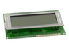 | 1x | LCD display 2×16 Hitachi HD44780 compatible |
| 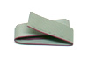 | 1x | Cable plano 16 vias |
 |
1x | ML16 (16 pines IDC) Molex PCB hembra |
| 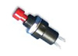 | 2x | Botones de caja (SPNO) |
| 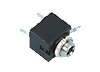 | 3x | Jack Stereo 3,5 mm hembra de caja |
| 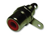 | 5x | RCA hembra de caja |
| 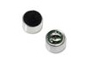 | 1x | Microfono Electret |
| 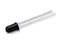 | 1x | Fotodiodo infrarrojo |
| 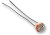 | 1x | LDR fotoresistencia |
| 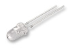 | 1x | LED infrarrojo 5mm |
| 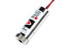 | 1x | Puntero laser rojo de baja potencia (5 mW) |
 |
1x | Altavoz piezoelectrico plano (para sensor de choque) |
| 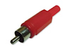 | 5x | RCA macho aereo |
 |
1x | Jack Stereo 3,5 mm macho |
 |
1x | Jack Stereo 2,5 mm macho Comprueba aqui el conector de tu cámara |
 |
4x | Jack Mono 3,5 mm macho |
| 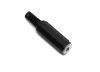 | 2x | Jack Mono 3,5 mm hembra |
Conexiones externas
Aqui tienes la información necesaria para realizar las conexiones entre Photoduino Shield y cada elemento externo. Entre photoduino y cada elemento puede haber conectores intermedios, pero lo importante es mantener correctamente las conexiones como se muestra en las siguientes imagenes.
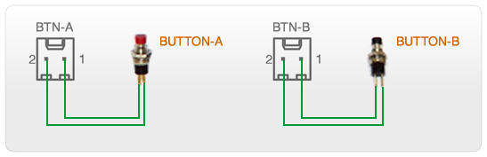
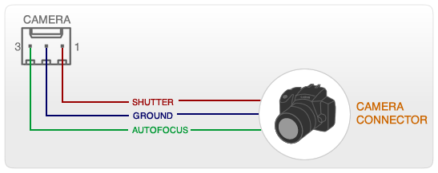
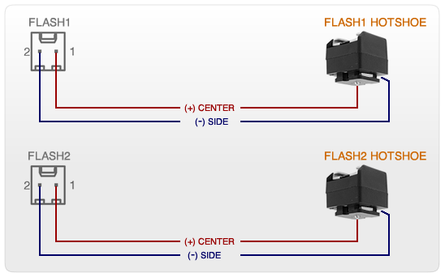
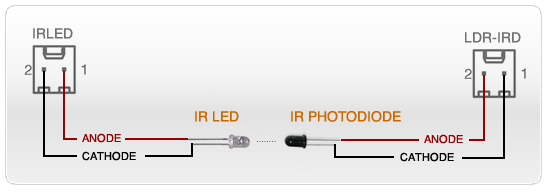

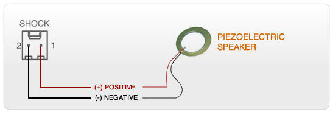